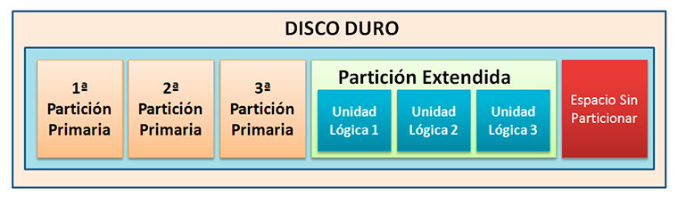
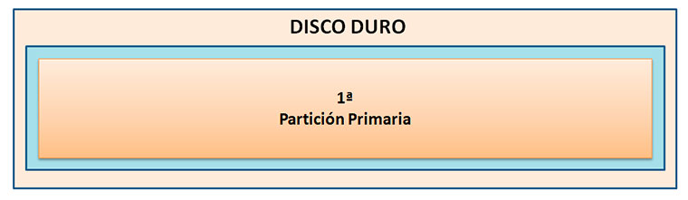
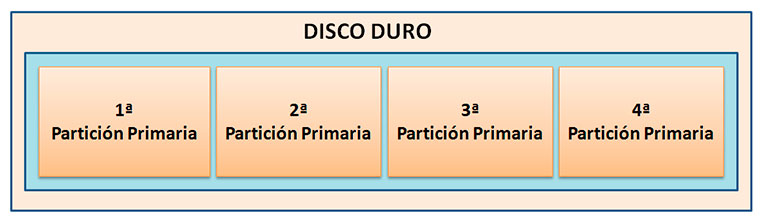
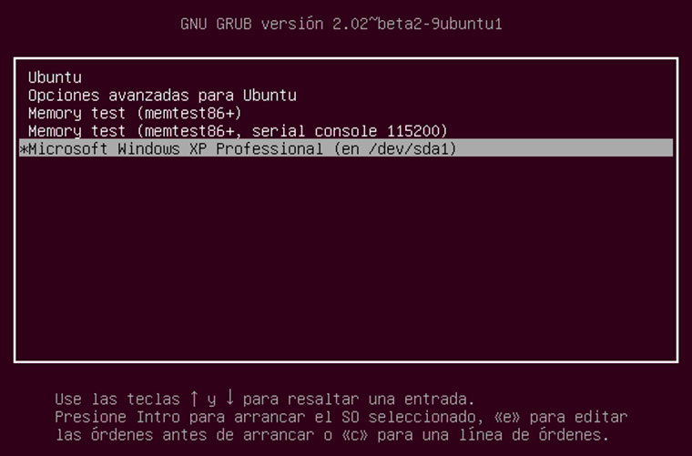
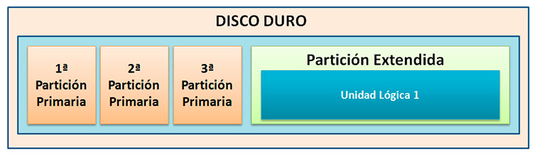
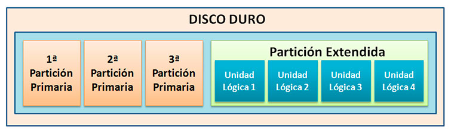

El formato o sistema de archivo de una partición (por ejemplo NTFS) no debe ser confundido con el tipo de partición (por ejemplo “partición primaria”), ya que en realidad no tienen directamente mucho que ver.

Independientemente del sistema de archivos de una partición (FAT, NTFS, ext3, ext4, etc.), si se habla de un disco duro que use MBR, existen 3 tipos diferentes de particiones:
- Partición primaria. Son las divisiones primarias del disco que dependen de una tabla de particiones, y son las que detecta el ordenador al arrancar, por lo que es en ellas donde se instalan los sistemas operativos. Puede haber un máximo de cuatro, y prácticamente cualquier sistema operativo las detectará y asignará una unidad siempre y cuando utilicen un sistema de archivo compatible. Un disco duro completamente formateado contiene en realidad una partición primaria ocupando todo su espacio.. Un disco duro físico completamente formateado (por ejemplo, una unidad de disco duro externa USB nueva) consiste, en realidad, en una partición primaria que ocupa todo el espacio del disco y posee un sistema de archivos. Prácticamente, cualquier sistema operativo puede detectar este tipo de particiones primarias, y asignarles una unidad, siempre y cuando el sistema operativo reconozca su formato (sistema de archivos).


La partición primaria puede ser reconocida como una partición de arranque y puede contener un sistema operativo que realice el arranque del equipo. Una de las particiones primarias se llama la partición activa y es la de arranque. El ordenador busca en esa partición activa el arranque del sistema. Cuando hay varios sistemas operativos instalados la partición activa tiene un pequeño programa llamado gestor de arranque que presenta un pequeño menú que permite elegir qué sistema operativo se arranca.

• Partición extendida. También conocida como partición secundaria, es otro tipo de partición que actúa como una partición primaria; sirve para contener múltiples unidades lógicas en su interior. Fue ideada para romper la limitación de 4 particiones primarias en un solo disco físico. Solo puede existir una partición de este tipo por disco, y solo sirve para contener particiones lógicas. Por lo tanto, es el único tipo de partición que no soporta un sistema de archivos directamente. Fue ideada para poder tener más de cuatro particiones en un disco duro, aunque en ella no se puede instalar un sistema operativo. Esto quiere decir que sólo la podremos usar para almacenar datos. Sólo puede haber una de ellas, aunque dentro podremos hacer tantas otras particiones como queramos. Si utilizas esta partición, el disco sólo podrá tener tres primarias, siendo la extendida la que actúe como cuarta.


• Partición lógica. Ocupa una porción de la partición extendida o la totalidad de la misma, y se ha formateado con un tipo específico de sistema de archivos (FAT32, NTFS, ext3, ext4, etc.) y se le ha asignado una unidad, así el sistema operativo reconoce las particiones lógicas o su sistema de archivos. Se pueden tener un máximo de 23 particiones lógicas en una partición extendida. Funcionan como si fueran dispositivos independientes, y puedes utilizarla para almacenar cualqueir archivo. Aunque algunos sistemas operativos pueden ser más restrictivos, como Linux que impone un máximo de 15, incluyendo las 4 primarias, en discos SCSI y en discos IDE 8963.